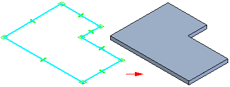
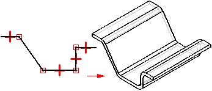
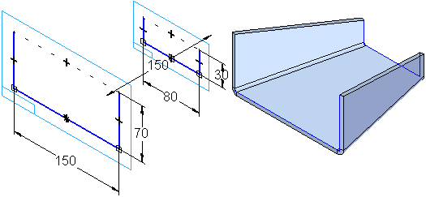
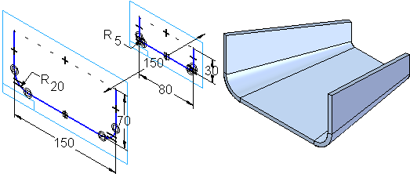

Construct the base feature
You can construct a base feature with the Tab, Contour Flange, and Lofted Flange commands. The Tab command constructs a flat feature of any shape using a closed profile.

The Contour Flange command constructs a feature comprised of one or more bends and flats using an open profile.

The Lofted Flange command quickly constructs a flange using two open profiles on parallel reference planes. Like the Contour Flange command, the Lofted Flange command automatically adds bends using the bend radius property. You do not have to draw an arc at each bend location.

If you want to use a different bend radius value, you can do this by drawing arcs in the profiles.

The Bending Method tab on the Lofted Flange dialog box creates incremental bends for all bends in the flange.

You can set the number of bends. For the lofted flange to flatten, the arc angle must match between the two cross sections.